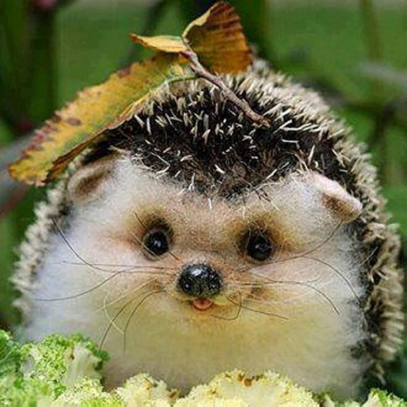

Что такое ежик?
Обыкновенный ёж — животное небольших размеров. Длина его тела составляет 20—30 см, хвоста — около 3 см[5] масса тела — 700—800 г[6]. Уши относительно небольшие (обычно меньше 3,5 см). Морда вытянутая. Нос у животного острый и постоянно влажный. У обыкновенных ежей, обитающих на Кипре, уши более крупные[7]. На верхней челюсти у ежей 20 мелких острых зубов, а на нижней — 16. Верхние резцы широко расставлены, оставляя место для прикуса нижним резцам. Голова относительно крупная, клинообразная, со слабоудлинённым лицевым отделом[8]. На лапах по 5 пальцев с острыми когтями. Задние конечности более длинные, чем передние[7]. Иглы у обыкновенного ежа короткие, не более 3 см. На голове иглы разделены на 2 части «пробором». Поверхность игл гладкая, окраска их слагается чередованием буроватых и светлых поясков[9]. На спине, боках и голове иглы достигают в длину 2 см. Внутри они полые, наполненные воздухом. Растут иглы с такой же скоростью, как и волосы. Между иглами располагаются тонкие, длинные, очень редкие волосы. Голова и брюхо покрыты грубоватыми и обычно тёмно-окрашенными волосами[8][5]. У взрослых ежей обычно по 5—6 тысяч игл, у более молодых особей около 3 тыс.